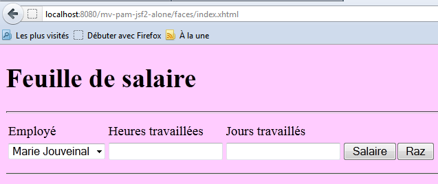

10. Version 5 – Webanwendung PAM / JSF
10.1. Architektur der Anwendung
Die Architektur der Webanwendung PAM sieht wie folgt aus:
 |
In dieser Version wird der Glassfish-Server alle Schichten der Anwendung hosten:
- Die Schicht [web] wird vom Servlet-Container des Servers gehostet (1 unten)
- die anderen Schichten [metier, DAO, jpa] werden vom EJB3-Container des Servers gehostet (2 unten)
 |
Die Elemente [metier, DAO] der Anwendung, die im Container EJB3 ausgeführt werden, wurden bereits in der in Abschnitt 7.1 behandelten Client-Server-Anwendung beschrieben, deren Architektur wie folgt aussah:
 |
Die Schichten [metier, DAO] liefen im Container EJB3 des Glassfish-Servers und die Schicht [ui] in einer Konsolen- oder Swing-Anwendung auf einem anderen Rechner:
 |
In der Architektur der neuen Anwendung:
 |
muss nur die Schicht [web / jsf] neu geschrieben werden. Die anderen Schichten [metier, DAO, jpa] sind bereits vorhanden.
Im Dokument [ref3] wird gezeigt, dass eine Webanwendung, bei der die Webschicht mit Java Server Faces implementiert ist, eine ähnliche Architektur wie die folgende aufweist:
 |
Diese Architektur implementiert das Entwurfsmuster MVC (Model, View, Controller). Die Bearbeitung einer Client-Anfrage läuft wie folgt ab:
Wird die Anfrage über ein GET gestellt, werden die beiden folgenden Schritte ausgeführt:
- Anfrage – Der Browser des Kunden sendet eine Anfrage an den Controller [Faces Servlet]. Dieser empfängt alle Kundenanfragen. Er ist das Eingangstor der Anwendung. Er entspricht dem „C“ in MVC.
- Antwort – Der Controller C fordert die ausgewählte Seite JSF auf, sich anzuzeigen. Dies ist die Ansicht, das „V“ von MVC. Die Seite JSF verwendet eine Vorlage M, um die dynamischen Teile der Antwort zu initialisieren, die sie an den Client senden muss. Diese Vorlage ist eine Java-Klasse, die auf die Schichten [métier] und [4a] zugreifen kann, um der Ansicht V die benötigten Daten bereitzustellen.
Wird die Anfrage mit einem POST gestellt, schieben sich zwei zusätzliche Schritte zwischen Anfrage und Antwort:
- Anfrage – Der Browser des Kunden sendet eine Anfrage an den Controller [Faces Servlet].
- Verarbeitung – Der Controller C verarbeitet diese Anfrage. Eine Anfrage vom Typ POST enthält nämlich Daten, die verarbeitet werden müssen. Dazu wird der Controller von anwendungsspezifischen Ereignisbehandlungsroutinen unterstützt, die in [2a] implementiert sind. Diese Handler benötigen möglicherweise die Geschäftslogikschicht [2b]. Der Ereignis-Handler muss unter Umständen bestimmte M-Modelle [2c] aktualisieren. Sobald die Anfrage des Kunden bearbeitet wurde, kann dies verschiedene Antworten auslösen. Ein klassisches Beispiel ist:
- eine Fehlerseite, wenn die Anfrage nicht korrekt bearbeitet werden konnte
- ansonsten eine Bestätigungsseite
Der Ereignis-Handler übergibt dem Controller [Faces Servlet] ein Ergebnis vom Typ Zeichenkette, das als Navigationsschlüssel bezeichnet wird.
- Navigation – der Controller wählt die Seite JSF (= Ansicht) aus, die an den Kunden gesendet werden soll. Diese Auswahl erfolgt anhand des vom Ereignis-Handler zurückgegebenen Navigationsschlüssels.
- Antwort – Die ausgewählte Seite JSF sendet die Antwort an den Client. Sie verwendet ihr M-Modell, um ihre dynamischen Teile zu initialisieren. Auch diese Vorlage kann die Ebene [métier] [4a] aufrufen, um der Seite JSF die benötigten Daten bereitzustellen.
In einem Projekt JSF:
- ist der Controller C das Servlet [javax.faces.webapp.FacesServlet]. Dieses befindet sich in der Bibliothek [jsf-api.jar].
- Die Ansichten V werden durch die Seiten JSF implementiert.
- Die Modelle M und die Ereignisbehandler werden durch Java-Klassen implementiert, die oft als „Backing Beans“ bezeichnet werden.
- In den Versionen JSF und 1.x sind die Definitionen der Beans sowie die Regeln für die Navigation von einer Seite zur anderen in der Datei [faces-config.xml] festgelegt. Darin finden sich die Liste der Ansichten und die Regeln für den Übergang von einer zur anderen. Ab der Version JSF 2 können die Beans mithilfe von Annotationen definiert werden, und die Übergänge zwischen den Seiten können „fest“ im Code der Beans festgelegt werden.
10.2. Funktionsweise der Anwendung
Wenn die Anwendung zum ersten Mal aufgerufen wird, wird die folgende Seite angezeigt:
 |
Man füllt dann das Formular aus und fragt anschließend das Gehalt ab:
 |
Man erhält das folgende Ergebnis:
 |
Diese Version berechnet ein fiktives Gehalt. Man sollte nicht auf den Inhalt der Seite achten, sondern auf deren Formatierung. Wenn man die Schaltfläche [Raz] verwendet, gelangt man zurück zur Seite [A].
Fehlerhafte Eingaben werden angezeigt, wie das folgende Beispiel zeigt:
 |
10.3. Das NetBeans-Projekt
Wir werden eine erste Version der Anwendung erstellen, in der die Schicht [métier] simuliert wird. Dabei ergibt sich folgende Architektur:
 |
Wenn die Ereignisbehandler oder Modelle Daten von der Schicht [métier] [2b, 4a] anfordern, liefert diese ihnen fiktive Daten. Das Ziel ist es, eine Webschicht zu erhalten, die korrekt auf die Anfragen des Benutzers reagiert. Sobald dies erreicht ist, müssen wir nur noch die in Abschnitt 7.1 entwickelte Serverschicht installieren:
 |
Dies wird die Version 2 der Webversion unserer Anwendung PAM sein.
Das NetBeans-Projekt der Version 1 ist das folgende Maven-Projekt:
 |
- in [1], die Konfigurationsdateien
- in [2], die Seiten in XHTML und das Stylesheet
- in [3], die Klassen der Schicht in [web]
- in [4], die zwischen der Schicht [web] und der Schicht [métier] sowie der Schicht [métier] selbst ausgetauschten Objekte
- in [5], die Nachrichtendatei für die Internationalisierung der Anwendung
- in [6], die Abhängigkeiten der Anwendung
Wir gehen nun auf einige dieser Elemente ein.
10.3.1. Die Konfigurationsdateien
Die Datei [web.xml] wird standardmäßig von NetBeans generiert und enthält zusätzlich die Konfiguration einer Ausnahmeseite:
- Zeile 30: [index.html] ist die Startseite der Anwendung
- Zeilen 32–39: Konfiguration der Ausnahmeseite
Die Seite [exception.html] stammt aus [ref3]. Ihr Code lautet wie folgt:
Jede Ausnahme, die nicht explizit durch den Code der Webanwendung behandelt wird, führt zur Anzeige einer Seite, die der unten abgebildeten ähnelt:
 |
Die Datei [faces-config.xml] sieht wie folgt aus:
Beachten Sie bitte folgende Punkte:
- Zeilen 9–14: Die Datei [messages.properties] wird für die Internationalisierung der Seiten verwendet. Sie ist in den Seiten XHTML über den Schlüssel „msg“ zugänglich.
- Zeile 15: Legt fest, dass die Datei [messages.properties] vorrangig nach Fehlermeldungen durchsucht werden soll, die über die Tags <h:messages> und <h:message> angezeigt werden. Dies ermöglicht es, bestimmte Standard-Fehlermeldungen aus JSF neu zu definieren. Diese Möglichkeit wird hier nicht genutzt.
10.3.2. Das Stylesheet
Die Datei [styles.css] lautet wie folgt:
.libelle{
background-color: #ccffff;
font-family: 'Times New Roman',Times,serif;
font-size: 14px;
font-weight: bold
}
body{
background-color: #ffccff
}
.error{
color: #ff3333
}
.info{
background-color: #99cc00
}
.titreInfos{
background-color: #ffcc00
}
Hier sind einige Beispiele für JSF-Code, der diese Stile verwendet:
| |
| |
|  |
10.3.3. Die Nachrichtendatei
Die Nachrichtendatei [messages_fr.properties] lautet wie folgt:
form.titre=Feuille de salaire
form.comboEmployes.libell\u00e9=Employ\u00e9
form.heuresTravaill\u00e9es.libell\u00e9=Heures travaill\u00e9es
form.joursTravaill\u00e9s.libell\u00e9=Jours travaill\u00e9s
form.heuresTravaill\u00e9es.required=Indiquez le nombre d'heures travaill\u00e9es
form.heuresTravaill\u00e9es.validation=Donn\u00e9e incorrecte
form.joursTravaill\u00e9s.required=Indiquez le nombre de jours travaill\u00e9s
form.joursTravaill\u00e9s.validation=Donn\u00e9e incorrecte
form.btnSalaire.libell\u00e9=Salaire
form.btnRaz.libell\u00e9=Raz
exception.header=L'exception suivante s'est produite
exception.httpCode=Code HTTP de l'erreur
exception.message=Message de l'exception
exception.requestUri=Url demand\u00e9e lors de l'erreur
exception.servletName=Nom de la servlet demand\u00e9e lorsque l'erreur s'est produite
form.infos.employ\u00e9=Informations Employ\u00e9
form.employe.nom=Nom
form.employe.pr\u00e9nom=Pr\u00e9nom
form.employe.adresse=Adresse
form.employe.ville=Ville
form.employe.codePostal=Code postal
form.employe.indice=Indice
form.infos.cotisations=Informations Cotisations sociales
form.cotisations.csgrds=CSGRDS
form.cotisations.csgd=CSGD
form.cotisations.retraite=Retraite
form.cotisations.secu=S\u00e9curit\u00e9 sociale
form.infos.indemnites=Informations Indemnit\u00e9s
form.indemnites.salaireHoraire=Salaire horaire
form.indemnites.entretienJour=Entretien / Jour
form.indemnites.repasJour=Repas / Jour
form.indemnites.cong\u00e9sPay\u00e9s=Cong\u00e9s pay\u00e9s
form.infos.salaire=Informations Salaire
form.salaire.base=Salaire de base
form.salaire.cotisationsSociales=Cotisations sociales
form.salaire.entretien=Indemnit\u00e9s d'entretien
form.salaire.repas=Indemnit\u00e9s de repas
form.salaire.net=Salaire net
Diese Meldungen werden alle auf der Seite [index.xhtml] verwendet, mit Ausnahme derjenigen in den Zeilen 11–15, die auf der Seite [exception.xhtml] verwendet werden.
10.3.4. Der Geltungsbereich der Beans
Das Bean [web.forms.Form] hat den Geltungsbereich „request“:
import java.io.Serializable;
import javax.faces.bean.ManagedBean;
import javax.faces.bean.RequestScoped;
@ManagedBean
@RequestScoped
public class Form implements Serializable {
Das Bean [web.utils.ChangeLocale] hat den Geltungsbereich „application“:
package web.utils;
import java.io.Serializable;
import javax.faces.bean.ManagedBean;
import javax.faces.bean.SessionScoped;
@ManagedBean
@SessionScoped
public class ChangeLocale implements Serializable{
// die Ländereinstellung der Seiten
private String locale="fr";
public ChangeLocale() {
}
public String setFrenchLocale(){
locale="fr";
return null;
}
public String setEnglishLocale(){
locale="en";
return null;
}
public String getLocale() {
return locale;
}
public void setLocale(String locale) {
this.locale = locale;
}
}
10.3.5. Die Schicht [métier]
Die Schicht [métier] implementiert die folgende Schnittstelle IMetierLocal:
package metier;
import java.util.List;
import javax.ejb.Local;
import jpa.Employe;
@Local
public interface IMetierLocal {
// Lohnabrechnung abrufen
FeuilleSalaire calculerFeuilleSalaire(String SS, double nbHeuresTravaillées, int nbJoursTravaillés );
// Mitarbeiterliste
List<Employe> findAllEmployes();
}
Diese Schnittstelle wird im Serverteil der in Abschnitt 7.1 beschriebenen Client-Server-Anwendung verwendet.
Die Klasse Metier, die wir zum Testen der Schicht [web] verwenden werden, implementiert diese Schnittstelle wie folgt:
package metier;
...
public class Metier implements IMetierLocal {
// Mitarbeiterverzeichnis, sortiert nach Nummer SS
private Map<String,Employe> hashEmployes=new HashMap<String,Employe>();
// Mitarbeiterliste
private List<Employe> listEmployes;
// Lohnabrechnung abrufen
public FeuilleSalaire calculerFeuilleSalaire(String SS,
double nbHeuresTravaillées, int nbJoursTravaillés) {
// Den Mitarbeiter mit der Nummer SS abrufen
Employe e=hashEmployes.get(SS);
// eine fiktive Gehaltsabrechnung ausgeben
return new FeuilleSalaire(e,new Cotisation(3.49,6.15,9.39,7.88),new ElementsSalaire(100,100,100,100,100));
}
// Mitarbeiterliste
public List<Employe> findAllEmployes() {
if(listEmployes==null){
// Erstellung einer Liste mit zwei Mitarbeitern
listEmployes=new ArrayList<Employe>();
listEmployes.add(new Employe("254104940426058","Jouveinal","Marie","5 rue des oiseaux","St Corentin","49203",new Indemnite(2,2.1,2.1,3.1,15)));
listEmployes.add(new Employe("260124402111742","Laverti","Justine","La brûlerie","St Marcel","49014",new Indemnite(1,1.93,2,3,12)));
// Mitarbeiterverzeichnis, indiziert nach der Nummer SS
for(Employe e:listEmployes){
hashEmployes.put(e.getSS(),e);
}
}
// Ausgabe der Mitarbeiterliste
return listEmployes;
}
}
Wir überlassen es dem Leser, diesen Code zu entschlüsseln. Zu beachten ist die verwendete Methode: Um den Teil EJB der Anwendung nicht implementieren zu müssen, simulieren wir die Schicht [métier]. Sobald die Schicht [web] als korrekt deklariert ist, können wir sie durch die eigentliche Schicht [métier] ersetzen.
10.4. Das Formular [index.xhtml] und seine Vorlage [Form.java]
Wir erstellen nun die Seite XHTML des Formulars sowie deren Vorlage.
Empfohlene Lektüre in [ref3]:
- Beispiel Nr. 3 (mv-jsf2-03) für die Liste der in einem Formular verwendbaren Tags
- Beispiel Nr. 4 (mv-jsf2-04) für die vom Modell gefüllten Dropdown-Listen
- Beispiel Nr. 6 (mv-jsf2-06) zur Validierung der Eingaben
- Beispiel Nr. 7 (mv-jsf2-07) zur Verwaltung der Schaltfläche [Raz]
10.4.1. Schritt 1
Aufgabe: Erstellen Sie das Formular [index.xhtml] und das dazugehörige Modell [Form.java], die erforderlich sind, um die folgende Seite zu erhalten:
 |
Die Eingabekomponenten sind folgende:
id | Typ JSF | Vorlage | Rolle | |
comboEmployes | <h:selectOneMenu> | Zeichenkette comboEmployesValue List<Mitarbeiter> getEmployes() | enthält die Liste der Mitarbeiter in der Form „Vorname Nachname“. | |
heuresTravaillees | <h:inputText> | String heuresTravaillées | Anzahl der geleisteten Arbeitsstunden – Istwert | |
joursTravailles | <h:inputText> | Zeichenkette joursTravaillés | Anzahl der gearbeiteten Tage – Ganzzahl | |
btnSalaire | <h:commandButton> | startet die Lohnberechnung | ||
btnRaz | <h:commandButton> | Setzt das Formular in seinen ursprünglichen Zustand zurück |
- Die Methode getEmployes gibt eine Liste von Mitarbeitern zurück, die sie von der Ebene [métier] erhält. Die vom Kombinationsfeld angezeigten Objekte haben als Attribut itemValue die Mitarbeiter-Nr. SS und als Attribut itemLabel eine Zeichenfolge, die aus dem Vornamen und dem Nachnamen des Mitarbeiters besteht.
- Die Schaltflächen [Salaire] und [Raz] sind vorerst nicht mit Ereignisbehandlungsroutinen verknüpft.
- Die Gültigkeit der Eingaben wird überprüft.

Testen Sie diese Version. Überprüfen Sie insbesondere, ob Eingabefehler korrekt gemeldet werden.
Hinweis: Es ist wichtig, dass die ID-Attribute der Seitenkomponenten keine Akzentzeichen enthalten. Bei Glassfish 3.1.2 führt dies zum Absturz der Anwendung.
10.4.2. Schritt 2
Aufgabe: Füllen Sie das Formular [index.xhtml] und dessen Vorlage [Form.java] aus, um nach dem Klicken auf die Schaltfläche [Salaire] die folgende Seite zu erhalten:
 |
Die Schaltfläche [Salaire] wird mit dem Ereignismanager calculerSalaire der Vorlage verknüpft. Diese Methode nutzt die Methode calculerFeuilleSalaire der Ebene [métier]. Diese Gehaltsabrechnung wird für den in [1] ausgewählten Mitarbeiter erstellt.
In der Vorlage wird der Lohnzettel durch das folgende private Feld dargestellt:
private FeuilleSalaire feuilleSalaire;
mit den Methoden get und set.
Um die in diesem Objekt enthaltenen Informationen abzurufen, können auf der Seite JSF Ausdrücke wie der folgende geschrieben werden:
<h:outputText value="#{form.feuilleSalaire.employe.nom}"/>
Der Ausdruck des Attributs „value“ wird wie folgt ausgewertet:
[form].getFeuilleSalaire().getEmploye().getNom(), wobei [form] eine Instanz der Klasse [Form.java] darstellt. Der Leser kann überprüfen, ob die hier verwendeten Methoden get tatsächlich in den Klassen [Form], [FeuilleSalaire] bzw. [Employe] vorhanden sind. Wäre dies nicht der Fall, würde bei der Auswertung des Ausdrucks eine Ausnahme ausgelöst werden.
Testen Sie diese neue Version.
10.4.3. Schritt 3
Aufgabe: Füllen Sie das Formular [index.xhtml] und dessen Vorlage [Form.java] aus, um die folgenden zusätzlichen Informationen zu erhalten:
Wir gehen dabei genauso vor wie zuvor. Es gibt jedoch eine Schwierigkeit mit dem Euro-Währungssymbol, das beispielsweise in [1] enthalten ist. Im Rahmen einer internationalisierten Anwendung wäre es vorzuziehen, das Anzeigeformat und das Währungssymbol des verwendeten locale zu verwenden (en, de, fr, ...). Dies lässt sich wie folgt erreichen:
<h:outputFormat value="{0,number,currency}">
<f:param value="#{form.feuilleSalaire.employe.indemnite.entretienJour}"/>
</h:outputFormat>
Man hätte auch schreiben können:
<h:outputText value="#{form.feuilleSalaire.employe.indemnite.entretienJour} є">
aber mit der Locale en_GB (Englisch GB) würde weiterhin der Euro angezeigt, obwohl das Pfund £ verwendet werden müsste. Mit dem Tag <h:outputFormat> lassen sich Informationen entsprechend der locale der angezeigten Seite JSF anzeigen:
- Zeile 1: Zeigt den Parameter {0} an, bei dem es sich um eine Zahl (number) handelt, die einen Geldbetrag (currency) darstellt
- Zeile 2: Das Tag <f:param> weist dem Parameter {0} einen Wert zu. Ein zweites <f:param>-Tag würde dem Parameter {1} einen Wert zuweisen und so weiter.
10.4.4. Schritt 4
Empfohlene Lektüre: Beispiel Nr. 7 (mv-jsf2-07) in [ref3].
Frage: Vervollständigen Sie das Formular [index.xhtml] und dessen Vorlage [Form.java], um die Schaltfläche [Raz] zu verwalten.
Die Schaltfläche [Raz] versetzt das Formular in den Zustand zurück, in dem es sich befand, als es zum ersten Mal über eine Schaltfläche GET aufgerufen wurde. Hier gibt es mehrere Schwierigkeiten. Einige davon wurden in [ref3] erläutert.
Das durch die Schaltfläche [Raz] gerenderte Formular ist nicht das gesamte Formular, sondern nur der Teil saisie davon:

Dieses Ergebnis lässt sich mit einem <f:subview>-Tag erzielen, das wie folgt verwendet wird:
<f:subview id="viewInfos" rendered="#{form.viewInfosIsRendered}">
... la partie du formulaire qu'on veut pouvoir ne pas afficher
</f:subview>
Das <f:subview>-Tag umschließt den gesamten Teil des Formulars, der ein- oder ausgeblendet werden kann. Jede Komponente kann mithilfe des Attributs „rendered“ ein- oder ausgeblendet werden. Ist rendered="true", wird die Komponente angezeigt; ist rendered="false", wird sie nicht angezeigt. Nimmt das Attribut rendered im Modell einen Wert an, kann die Anzeige der Komponente programmgesteuert werden.
Im obigen Beispiel wird die Anzeige der Ansicht viewInfos mit dem folgenden Feld gesteuert:
private boolean viewInfosIsRendered;
zusammen mit den zugehörigen Methoden get und set. Die Methoden, die die Klicks auf die Schaltflächen [Salaire] und [Raz] verarbeiten, aktualisieren diesen booleschen Wert je nachdem, ob die Ansicht viewInfos angezeigt werden soll oder nicht.